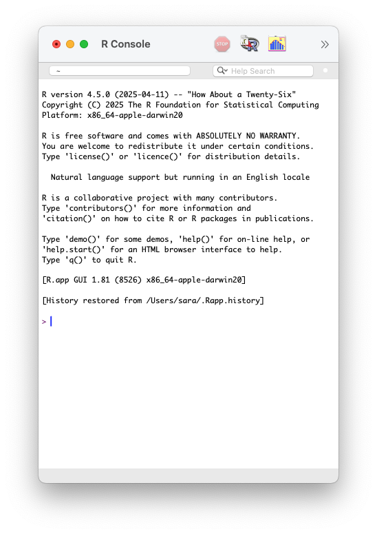
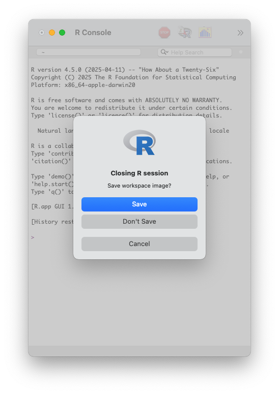

INTRODUCTION TO
R PROGRAMMING LANGUAGE
2 Days Data Science Workshop at Institute of Development Studies, Jaipur (ICSSR)
Hello! Everyone

Data Science Project

R Programming Language

“R is a free software environment for statistical computing and graphics.”
History of R
Initially developed as S language by Bell Laboratories.
First appeared in August 1993 as R language by:
Download R from CRAN

R Console
R version 4.5.0 (2025-04-11)
R name “How About a Twenty-Six”
R licence “ABSOLUTELY NO WARRANTY”
R prompt
>

Workspace Image
Don’t save workspace image.
It helps in “freshly minted R sessions”.
“put more trust in your script than in your memory”.

Coding in
R Console
R Console
Code
Output
[1] 7
R Console: Addition
Operators
12 + 3 in this code + is an operator.
“Operators are used to perform operations on variables and values.”
Arithmetic Operators
“Arithmetic operators are used with numeric values to perform common mathematical operations.”
Arithmetic Operators
| Operator | Name | Example |
|---|---|---|
+ |
Addition | x + y |
- |
Subtraction | x - y |
* |
Multiplication | x * y |
/ |
Division | x / y |
^ |
Exponent | x ^ y |
R Console: Subtraction
R Console: Multiplication
R Console: Division
R Console
R Comparison Operators
“Comparison operators are used to compare two values.”
R Comparison Operators
| Operator | Name | Example |
|---|---|---|
== |
Equal | x == y |
!= |
Not equal | x != y |
> |
Greater than | x > y |
< |
Less than | x < y |
>= |
Greater than or equal to | x >= y |
<= |
Less than or equal to | x <= y |
R Console
R Console
R Miscellaneous Operator
“Miscellaneous operators are used to manipulate data.”
What if we want to add all these values in R?
[1] 12 13 14 15 16 17 18 19 20 21 22 23 24 25 26 27 28 29 30 31 32 33 34 35 36
Functions
R Function
“A function, in a programming environment, is a set of instructions.”
“A programmer builds a function to avoid repeating the same task, or reduce complexity.”
R Function
Structure of a R function

Structure of a R function
Structure of a R function
Structure of a R function

Structure of a R function

R Function sum()
Round function
Round function
Square Root Function
Sequence Function
Plot using R
Create Function
– reusable set of instructions
Getting Help with R
The
help()function and?help operator in R.Use
args()function to the get the list of arguments of a function.
🧑🏽💻👨🏽💻
Question & Answer
🤯 Your Turn
15:00
Add two numbers: 15 + 27
Create a sequence of numbers from 1 to 10
Create a sequence from 5 to 50, increasing by 5
Find the square root of 81
Round the number 3.786 to 2 decimal places
🤩 Your Turn
Add two numbers: 15 + 27,
15 + 27Create a sequence of numbers from 1 to 10,
seq(1, 10)Create a sequence from 5 to 50, increasing by 5,
seq(5, 50, by = 5)Find the square root of 81,
sqrt(81)Round the number 3.786 to 2 decimal places,
round(3.786, 2)
😏 That’s okay but how to …
combine plot, text, tables and images in a single file,
publish my work online or convert into a word, pdf or html file, and
work efficiently with my different projects and save, share and track them.

🔥 WE NEED A SUPERHERO - RStudio 🔥